Local Geographic Crime Distribution
Developed a python program that would scrape data from a local instagram account
that publishes recent crimes and apply that data to a geographical map to allow a user to analyze
the geographical distrubtion of crimes within the city of Lubbock. This project helped me polish off
my Python abilities and also learn how to work with documentation and less common libraries for coding
while also learning how to utilize resources and finding what I need when it comes to software development.
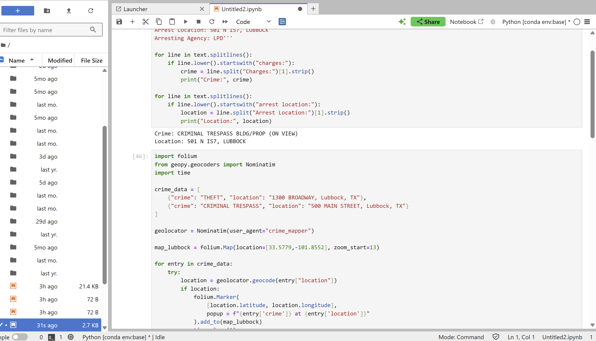
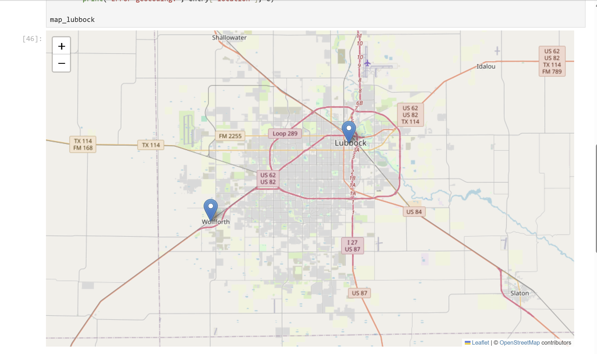
Arduino Learning
I tought myself basic circuitry and embedded systems programming with an Arduino
microcontroller that helped me bridge the gap in my knowledge from the world of software to physical outputs.
Later worked towards programming more complex systems that included sensors and I learned how to intake that
given data and utilize it in other embedded programs to yield corresponding desired outputs. I would then 3D
print custom parts for some of these projects that would allow me to know how to make any device that I could
possible need.
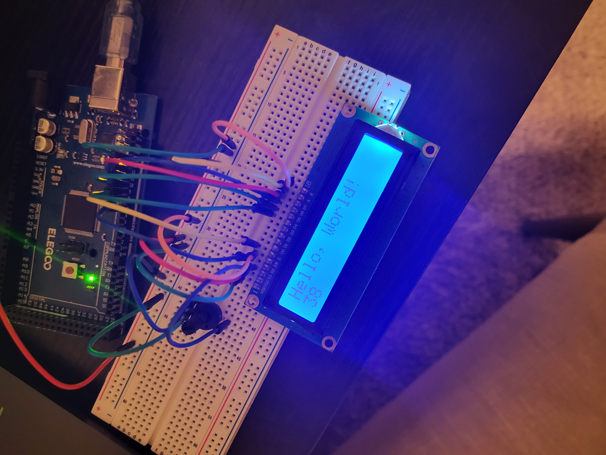
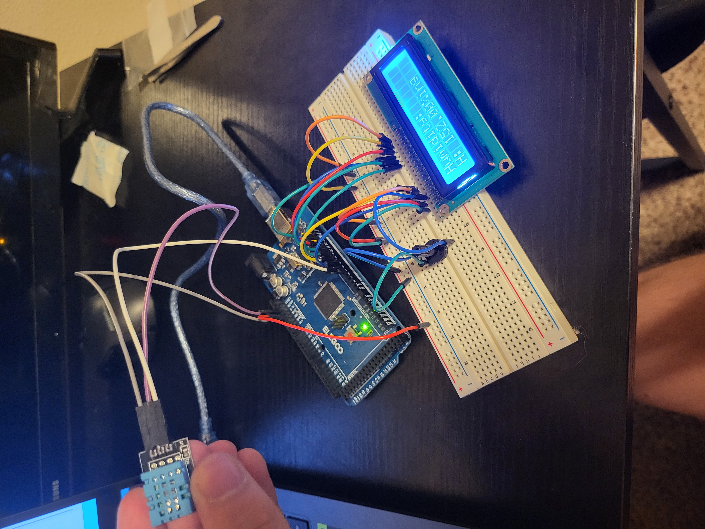
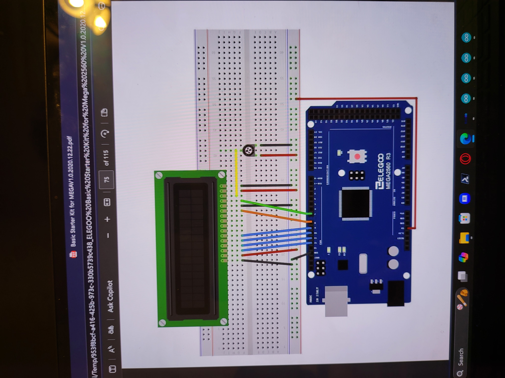
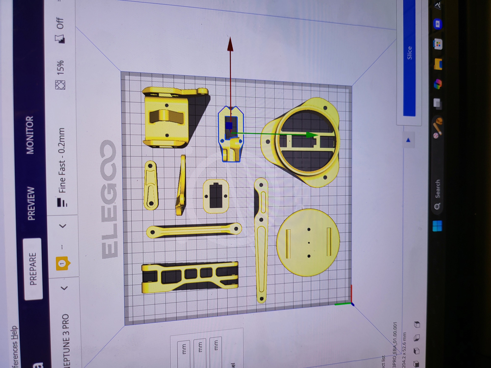
C#/XAML/Net Maui
I learned the C# and XAML languages along with the main view model architecture behind developing responsive mobile applications. I used this knowledge to create a faux app using these languages and architecture to apply these skills. This introduced me to more complex coding architecture and how these different files interact with each other to provide functionality and graphical user interfaces to not only mobile applications, but other forms of software as well.
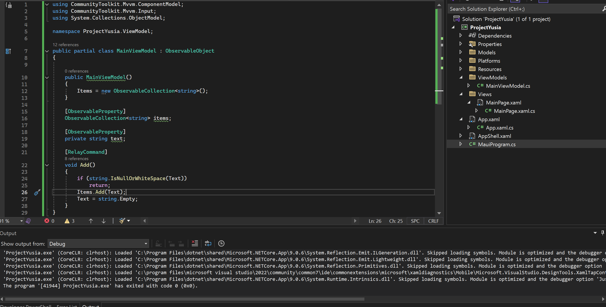
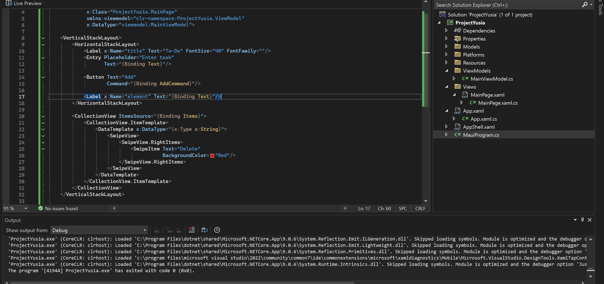
Certifications
Earned 3 certifications in C#, Responsive Web Design*, and Autodesk Fusion 360
respectively. The Autodesk Fusion 360 Certification was from completing an Introduction to Engineering Course
at my school and passing an exam. The C# and Responsive Web Design Certifications were earned on my free time
through FreeCodeCamp.org as passion projects and side tasks alongside school and other extracurriculars. These
certifications brought to me actual, real world programming experience that allows me to develop mobile and web
applications providing me with invaluable career skills. I learned more on problem solving effectively not just
through logic but syntax and software architecture based issues as well allowing for me to extrapolate these
skills further within my desired industry.
*The Responsive Web Design Curriculum at the time of assembling this
portfolio no longer matched current curriculum so I was unable to aquire a digital copy of it.
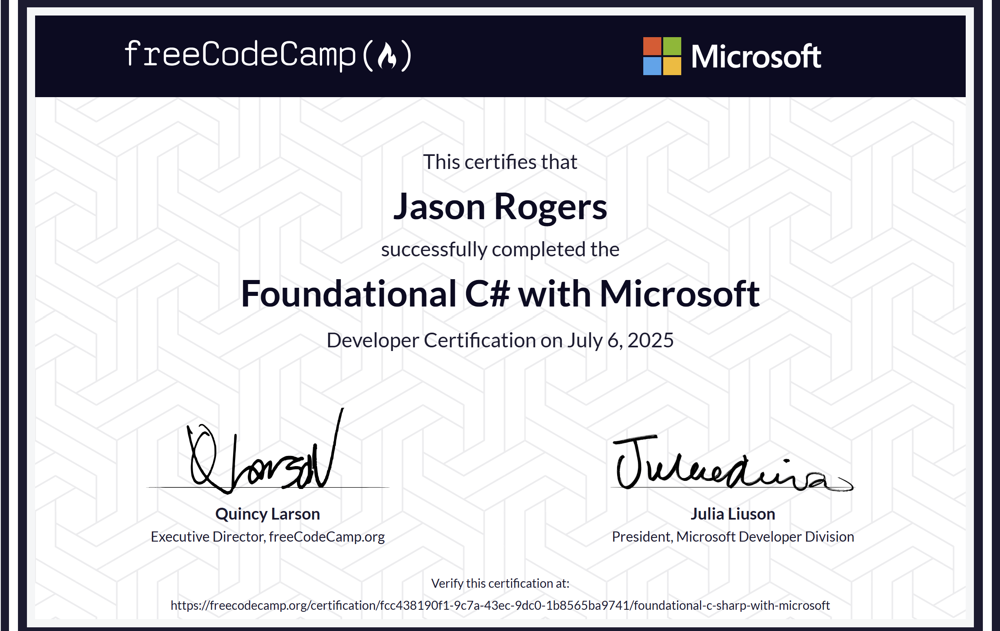
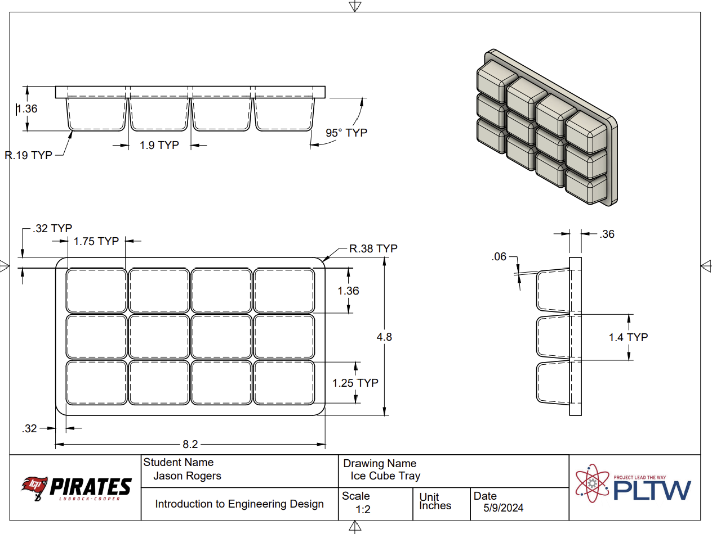
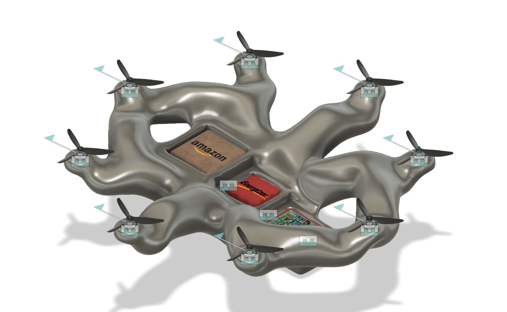
Java Flashcards
Created a command line interface flashcard system based on Java's object oriented programming and class creation. The general prompt revolves around creating Card objects with questions and answers that are assigned by the user. The user can continously generate these cards until they are ready to review in which the program will prompt them with questions at random, let them know whether or not they were correct and the percentage of questions that they got right. This project allowed me to gain proper fluency with object oriented programming alongside generating large scale projects independently.